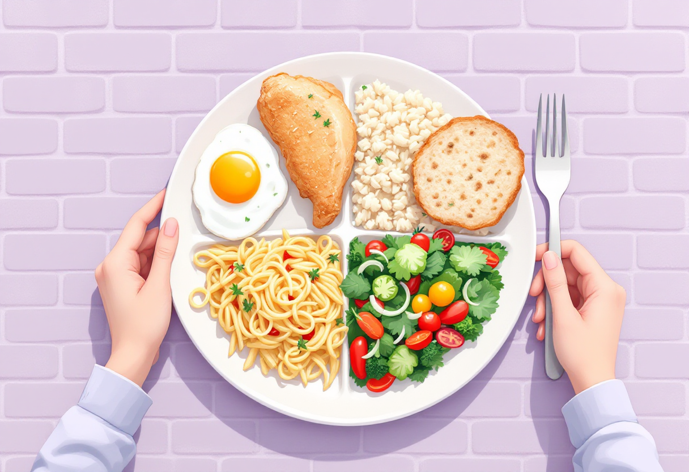
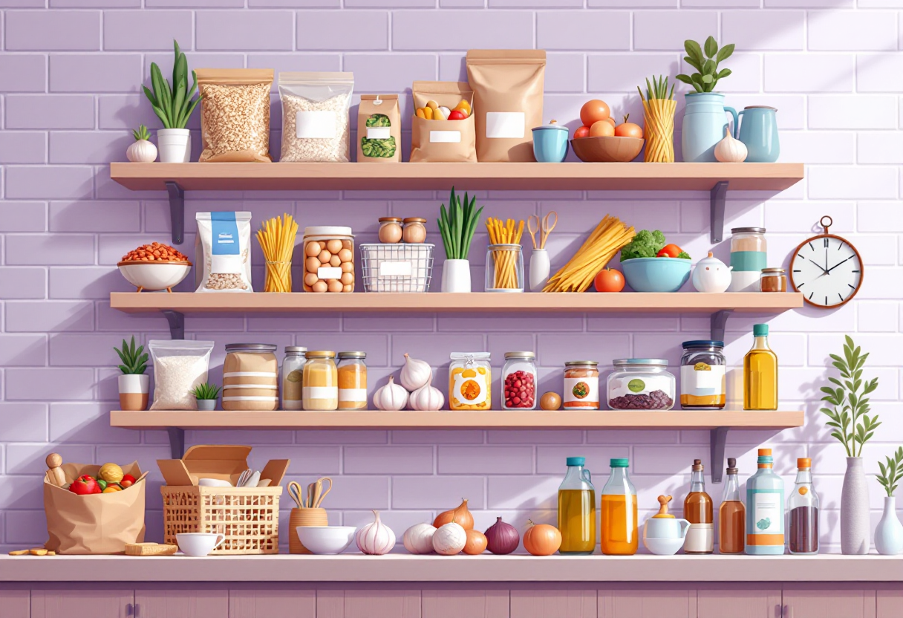
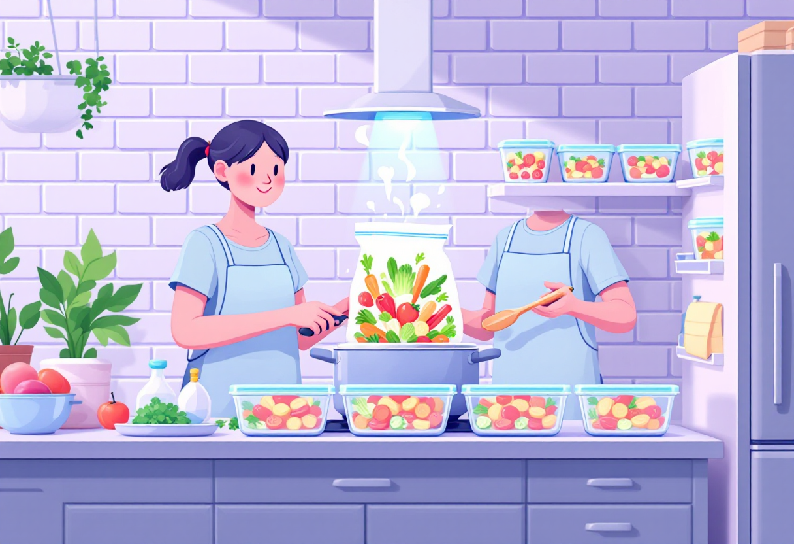
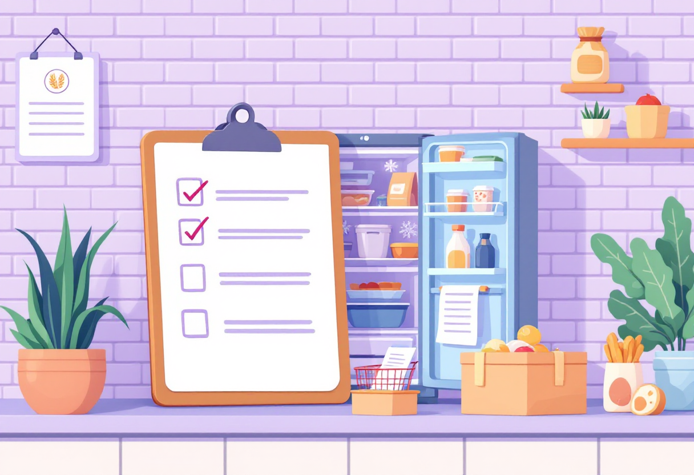

Прості обіди
Страви на кілька днів із мінімуму інгредієнтів — без кулінарної освіти і зайвих зусиль.

Meal prep: готуй раз — їж кілька днів
Готувати щодня — виснажливо. Краще витратити 1–2 години у вихідний і мати їжу на тиждень.
- Обери 1–2 базові страви на тиждень і приготуй великий об'єм.
- Зберігай у лоточках у холодильнику — до 4 днів.
- Заморожуй порції — це подовжує термін до 2–3 місяців.
- Варіюй соуси та доповнення — одна база, різний смак.

5 простих страв, які легко приготувати
Не потрібен кулінарний досвід — лише базові продукти і 30–40 хвилин часу.
- Гречка з куркою — відвари окремо, змішай, додай олію і спеції.
- Макарони з томатним соусом — цибуля + томати + часник на сковорідці.
- Рис з овочами — заморожені овочі + рис + соєвий соус.
- Суп з сочевиці — сочевиця + морква + цибуля + спеції.
- Яєчня з овочами — швидко, поживно, підходить коли немає часу.

Базові продукти для простих обідів
З цим набором продуктів можна зготувати 10+ різних страв на тиждень.
- Крупи: рис, гречка, макарони, сочевиця.
- Білок: яйця, куряче філе або стегна, консерви (тунець, квасоля).
- Овочі: цибуля, морква, часник, заморожені суміші.
- Спеції: сіль, перець, паприка, куркума, соєвий соус.

Зберігання готової їжі
Правильне зберігання — це безпека і смак. Кілька простих правил.
- Охолоджуй їжу перед тим, як ставити в холодильник.
- У герметичних контейнерах їжа зберігається довше і не вбирає запахи.
- Підписуй контейнери: що і коли приготовлено.
- Не розігрівай страви більше одного разу.